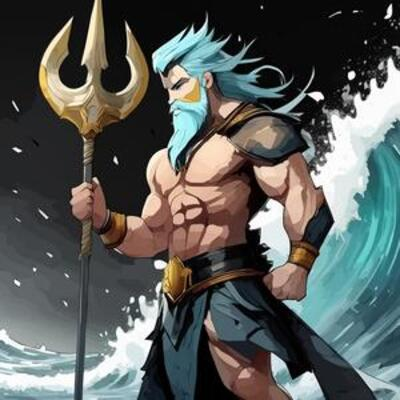
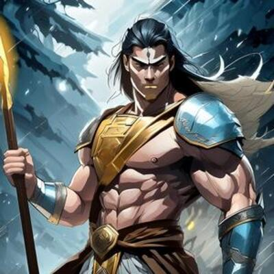

존경하는 손 우 성 교수님께..
제가 아직 포트폴리오에 넣을 수 있는 자료나 결과물이 거의 없어서 형태만 갖추었습니다.
메인 페이지는 나에 대해서와 내가 쓸 수 있는 툴, 능력 등이 기재될 페이지입니다. 하지만 아직은 그냥 아무거나 넣어놨습니다.
제가 아직 포트폴리오에 넣을 수 있는 자료나 결과물이 거의 없어서 형태만 갖추었습니다.
메인 페이지는 나에 대해서와 내가 쓸 수 있는 툴, 능력 등이 기재될 페이지입니다. 하지만 아직은 그냥 아무거나 넣어놨습니다.
About 제우스
제우스는 고대 그리스 신화에서 올림포스 신들의 왕으로, 하늘과 천둥의 신이자, 크로노스와 레아의 아들로, 형제들과 힘을 합쳐 아버지를 물리치고 신들의 통치자가 되었다. 번개, 독수리, 황금 옥좌가 그의 주요 상징입니다.
제우스는 고대 그리스 신화에서 올림포스 신들의 왕으로, 하늘과 천둥의 신이자, 크로노스와 레아의 아들로, 형제들과 힘을 합쳐 아버지를 물리치고 신들의 통치자가 되었다. 번개, 독수리, 황금 옥좌가 그의 주요 상징입니다.
아폴론
아폴론은 그리스 신화에서 태양, 예언, 음악, 치유의 신으로,
제우스와 레토의 아들이며 아르테미스의 쌍둥이 형제입니다. 그는
델포이 신탁을 통해 인간에게 예언을 전달하고, 리라를 연주하며
예술과 음악을 주관하는 신으로 널리 숭배되었습니다.

포세이돈
포세이돈은 그리스 신화에서 바다, 지진, 말의 신으로, 제우스와
하데스의 형제입니다. 그는 삼지창을 들고 있으며, 바다를 다스리며
선원과 어부들에게 숭배받는 신입니다.

아레스
아레스는 그리스 신화에서 전쟁과 폭력의 신으로, 제우스와 헤라의
아들입니다. 그는 전쟁의 혼돈과 파괴를 상징하며, 종종 무자비하고
잔인한 성격으로 묘사됩니다.
 아프로디테
아프로디테는 그리스 신화에서 사랑과 아름다움의 여신으로, 바다의
거품에서 태어났습니다. 그녀는 사랑, 미, 욕망을 관장하며 많은
신들과 인간들 사이에 사랑과 갈등을 불러일으켰습니다.
아프로디테
아프로디테는 그리스 신화에서 사랑과 아름다움의 여신으로, 바다의
거품에서 태어났습니다. 그녀는 사랑, 미, 욕망을 관장하며 많은
신들과 인간들 사이에 사랑과 갈등을 불러일으켰습니다.
 헤파이스토스
헤파이스토스는 그리스 신화에서 불과 대장장이의 신으로, 주로
신들을 위한 무기와 장비를 만드는 역할을 합니다. 그는 제우스와
헤라의 아들로, 기술과 지혜로 많은 신들과 영웅들에게 중요한
도구를 제공했습니다.
헤파이스토스
헤파이스토스는 그리스 신화에서 불과 대장장이의 신으로, 주로
신들을 위한 무기와 장비를 만드는 역할을 합니다. 그는 제우스와
헤라의 아들로, 기술과 지혜로 많은 신들과 영웅들에게 중요한
도구를 제공했습니다.